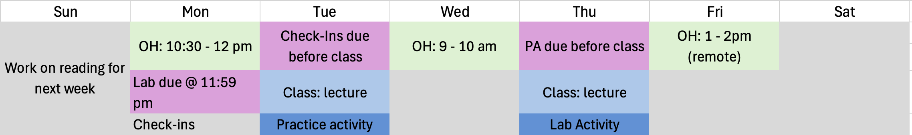

Intro to STAT 331/531 + Intro to R
Tuesday, April 1
Today we will…
- Welcome to Stat 331/531: Statistical Computing in R
- Intro to Me + You + the course
- Intro to
R+ RStudio - Organization
RBasics & Troubleshooting- PA 1: Find the Mistakes
Introductions
Me!
Hi, I’m Dr. C!
I am a transplant to the west coast.
My favorite things right now are cooking, knitting, and biking around SLO county.
I genuinely love
R.
You!
I am looking forward to reading your introductions on Discord!
- Please read the intros of your classmates so you can discover who you will be learning with this quarter.
Syllabus
Weekly Overview

Intro to R
What is R?
Ris a programming language designed originally for statistical analyses.Ris open source
What’ going on with R?
R’s strengths are…
handling data with lots of different types of variables.
making nice and complex data visualizations.
having cutting-edge statistical methods available to users.
R’s weaknesses are…
performing non-analysis programming tasks, like website creation (python, ruby, …).
hyper-efficient numerical computation (matlab, C, …).
being a simple tool for all audiences (SPSS, STATA, JMP, minitab, …).
But wait!
Packages
The heart and soul of R are packages.
- These are “extra” sets of code that add new functionality to R when installed.
- “base”
Rrefers to functions that are in theRsoftware, and do not require a package.
Open-Source
Importantly, R is open-source.
- There is no company that owns
R, like there is for SAS or Matlab. - This means packages are created by users like you and me!
- “Official”
Rpackages live on the Comprehensive R Archive Network, or CRAN. - But anyone can write and share new code in “package form”
Open-Source
Being a good open-source citizen means…
- sharing your code publicly when possible (later in this course, we’ll learn about GitHub!).
- contributing to public projects and packages, as you are able.
- creating your own packages, if you can.
- using
Rfor ethical and respectful projects.
Intro to 
Let’s get into it!
If you have RStudio installed on your computer, open it now.
Otherwise, open the Posit Cloud Project
What is RStudio?
RStudio is an IDE (Integrated Developer Environment).
- This means it is an application that makes it easier for you to interact with
R.


RStudio is Your Friend!
You will always interact with
Rthrough RStudioHelps with organization and some “point-and-click” options if desired
Organization & Directories
A lot of pieces go into a data analysis!
- files with code
- data files
- documentation
- images
- reports
- etc.

Organization is key!

What is a directory?
A directory is just a fancy name for a folder.
Directories are your friends!
Best practice:
- everything should have a place in a well-named directory
- do not include spaces in directory names
Project Directory Examples
Class Directory Examples
Manage your Class Directory
Create a directory for this class!
Is it in a place you can easily find it?
- NOT IN YOUR DOWNLOADS FOLDER ☠️
Does it have an informative name?
- like “stat-331” or similar
Are the files inside it well-organized?
Warning
I cannot stress how important this is!!
R Basics
Open our “starter” notes to follow along
If on your computer: Download and save w1-notes.qmd on your computer file and open it in RStudio.
If on Posit Cloud: Open “w1-notes.qmd”
How do I run code in R?
- You can run any lines of code directly in the Console
- But then your code isn’t saved!
- This is best for exporatory and one-off tasks
- We primarily write and run code in
Rscripts or notebooks in Source- These are documents where you can organize and save code!
- More on scripts vs. notebooks tomorrow
Packages
To install a package use:
- You should have to install a package only once.
To load a package use:
- You have to load a package each time you restart R.
- You also should load packages at the beginning of any script.
Warning
Note that when you install packages you need to include quotation marks around the package name, but you don’t need to when loading a package!
Data Types
A value is a basic unit of stuff that a program works with.
Values have types:
- logical / boolean: FALSE/TRUE or 0/1 values.
- integer: whole numbers.
- double / float / numeric: decimal numbers.
- character / string - holds text, usually enclosed in quotes.
Variables
Variables are names that refer to values.
A variable is like a container that holds something - when you refer to the container, you get whatever is stored inside.
We assign values to variables using the syntax
object_name <- value.- You can read this as “object name gets value” in your head.
Naming Conventions
some_people_use_snake_casesomePeopleUseCamelCasesome.people.use.periods- A few people mix conventions with
variables_thatLookLike.thisand they are almost universally hated.
Tip
Just pick one and stick with it!
Data Structures
Homogeneous: every element has the same data type.
Vector: a one-dimensional column of homogeneous data.
Matrix: the next step after a vector - it’s a set of homogenous data arranged in a two-dimensional, rectangular format.
Heterogeneous: the elements can be of different types.
List: a one-dimensional column of heterogeneous data.
Dataframe: a two-dimensional set of heterogeneous data arranged in a rectangular format.
Indexing
We use square brackets ([]) to access elements within data structures.
- In R, we start indexing from 1.
Logic
We can combine logical statements using and, or, and not.
(X AND Y) requires that both X and Y are true.
(X OR Y) requires that one of X or Y is true.
(NOT X) is true if X is false, and false if X is true.
Vectorization
Ris designed to do vector and matrix math nicelyMany operations in
Rare vectorized.- These functions operate on vectors of values rather than a single value.
- i.e. the function applies to every element of a vector individually.
Vectorization
- See how leveraging vectorization in
Ris great?
Loops be gone!
Now forget about loops after this slide! We rarely need them in R and will avoid using them in this class
Troubleshooting Errors!
Syntax Errors
Did you leave off a parenthesis?
seq(from = 1, to = 10, by = 1
Error in parse(text = input): <text>:2:0: unexpected end of input
1: seq(from = 1, to = 10, by = 1
^Did you leave off a comma?
seq(from = 1, to = 10 by = 1)
Error in parse(text = input): <text>:1:23: unexpected symbol
1: seq(from = 1, to = 10 by
^Did you make a typo? Are you using the right names?
sequence(from = 1, to = 10, by = 1)
Error in sequence.default(from = 1, to = 10, by = 1): argument "nvec" is missing, with no defaultObject Type Errors
Are you using the right input that the function expects?
sqrt(‘1’)
Are you expecting the right output of the function?
Error in my_obj(5): could not find function "my_obj"Errors + Warnings + Messages
Messages
Just because you see scary red text, this does not mean something went wrong! This is just R communicating with you.
Warnings
Often, R will give you a warning.
This means that your code did run…
…but you probably want to make sure it succeeded.
Does this look right?
Errors
If the word Error appears in your message from R, then you have a problem.
- This means your code could not run!
R what are you trying to tell me??
R says…
Error in ggplot() : could not find function “ggplot”
It probably means…
You haven’t installed/loaded the package that includes the ggplot() function OR you mispelled the function name
You should:
- check if the package is installed
- load the package (
library())
R says…
Error: Object
some_objnot found.
R says…
Error: Object of type ‘closure’ is not subsettable.
R says…
Error: Non-numeric argument to binary operator.
What if none of these solved my error?
Look at the help file for the function!
Break what you are doing down into smaller pieces and look at whether or not each step gives you what you expect
When all else fails, Google your error message.
- Include the function you are using.
Try it…
What’s wrong here?
Error in matrix(c("a", "b", "c", "d"), num_row = 2): unused argument (num_row = 2)Tip
Look up the help file for the function matrix by running ?matrix in the Console.
PA 1: Find the Mistakes
Part One:
This file has many mistakes in the code. Some are errors that will prevent the file from knitting; some are mistakes that do NOT result in an error.
Fix all the problems in the code chunks.
Part Two:
Follow the instructions in the file to uncover a secret message.
Submit the name of the poem as the answer to the Canvas Quiz question.
To do…
- Read Chapter 1: Introduction
- Check-ins 1.1 - 1.4
- Due Thursday (4/3) before class
- PA 1: Find the Mistakes
- Due Friday (4/4) at 11:59 pm